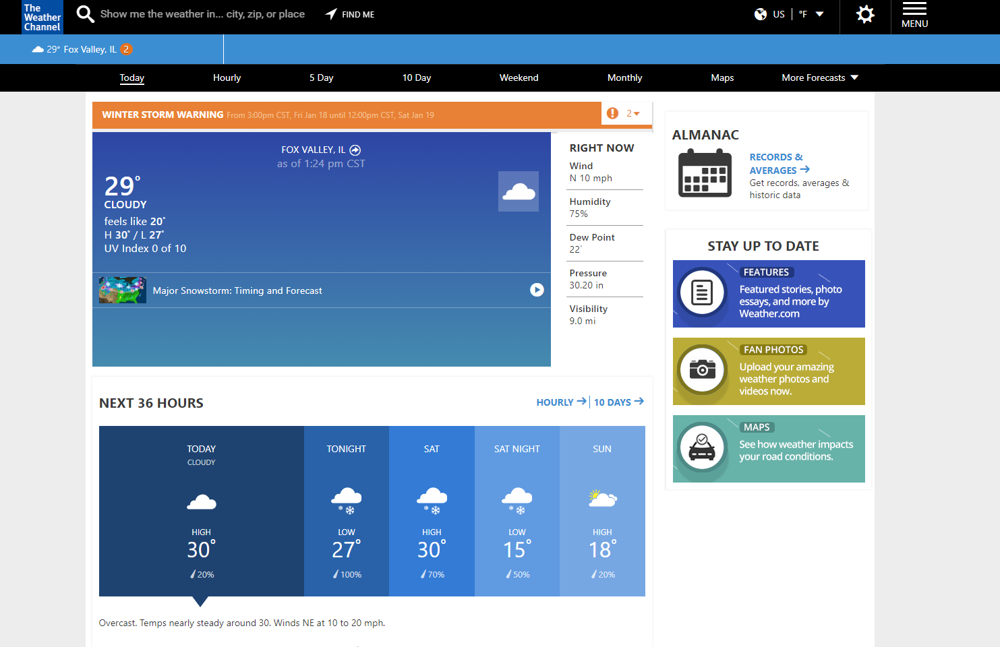

For weather I like to use weather.com as my resource. I like it for it simplistic representation of the weather through its icons and colors and I enjoy how it makes it very simple to search for any city. I like how there's an option to show a map as well if I really want to see in detail the weather per hour. In addition, it is a weather site that I have been using for the longest time, so it has a nostalgic usage.
TBD
TBD